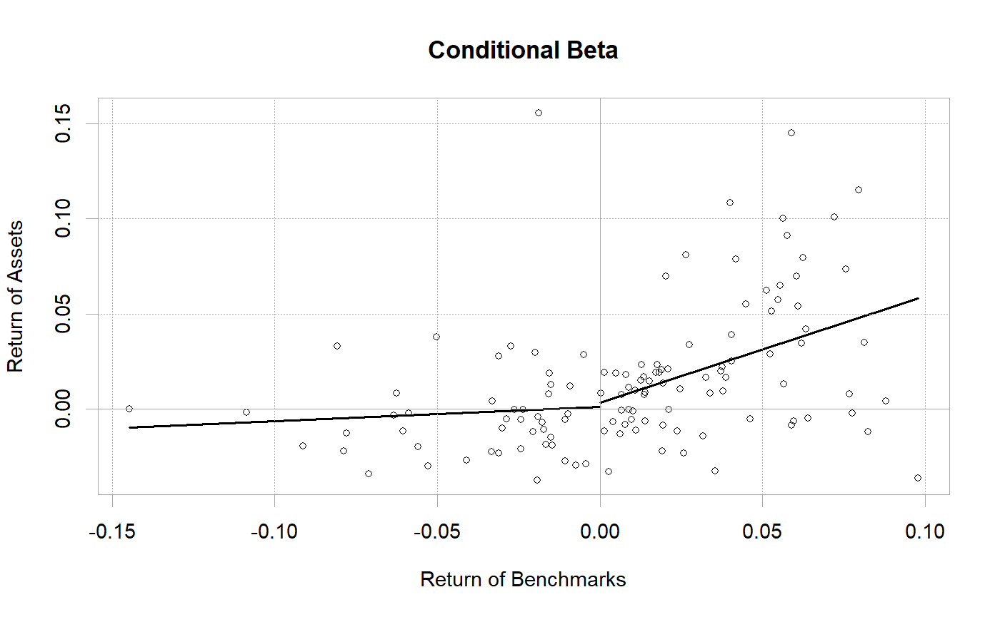

The single factor model or CAPM Beta is the beta of an asset to the variance and covariance of an initial portfolio. Used to determine diversification potential.
CAPM.beta(Ra, Rb, Rf = 0) CAPM.beta.bull(Ra, Rb, Rf = 0) CAPM.beta.bear(Ra, Rb, Rf = 0) TimingRatio(Ra, Rb, Rf = 0)
| Ra | an xts, vector, matrix, data frame, timeSeries or zoo object of asset returns |
|---|---|
| Rb | return vector of the benchmark asset |
| Rf | risk free rate, in same period as your returns |
This function uses a linear intercept model to achieve the same results as
the symbolic model used by BetaCoVariance
$$\beta_{a,b}=\frac{CoV_{a,b}}{\sigma_{b}}=\frac{\sum((R_{a}-\bar{R_{a}})(R_{b}-\bar{R_{b}}))}{\sum(R_{b}-\bar{R_{b}})^{2}}$$
Ruppert(2004) reports that this equation will give the estimated slope of the linear regression of \(R_{a}\) on \(R_{b}\) and that this slope can be used to determine the risk premium or excess expected return (see Eq. 7.9 and 7.10, p. 230-231).
Two other functions apply the same notion of best fit to positive and
negative market returns, separately. The CAPM.beta.bull is a
regression for only positive market returns, which can be used to understand
the behavior of the asset or portfolio in positive or 'bull' markets.
Alternatively, CAPM.beta.bear provides the calculation on negative
market returns.
The TimingRatio may help assess whether the manager is a good timer
of asset allocation decisions. The ratio, which is calculated as
$$TimingRatio =\frac{\beta^{+}}{\beta^{-}}$$
is best when greater than one in a rising market and less than one in a
falling market.
While the classical CAPM has been almost completely discredited by the literature, it is an example of a simple single factor model, comparing an asset to any arbitrary benchmark.
Sharpe, W.F. Capital Asset Prices: A theory of market equilibrium under conditions of risk. Journal of finance, vol 19, 1964, 425-442. Ruppert, David. Statistics and Finance, an Introduction. Springer. 2004. Bacon, Carl. Practical portfolio performance measurement and attribution. Wiley. 2004.
BetaCoVariance CAPM.alpha
CAPM.utils
#> [1] 0.005960609#> [1] 0.005774729#> HAM1 HAM2 HAM3 HAM4 HAM5 #> Alpha: SP500 TR 0.005960609 0.009232784 0.006327417 0.004144392 0.001425414 #> HAM6 #> Alpha: SP500 TR 0.007244216#> HAM1 HAM2 HAM3 HAM4 HAM5 #> Alpha: SP500 TR 0.005774729 0.009092773 0.006216498 0.004029731 0.001733199 #> HAM6 #> Alpha: SP500 TR 0.007837454#> HAM1 HAM2 HAM3 HAM4 #> Alpha: SP500 TR 0.005960609 0.009232784 0.006327417 0.004144392 #> Alpha: EDHEC LS EQ 0.003190734 0.001627709 -0.001716897 -0.003357739 #> HAM5 HAM6 #> Alpha: SP500 TR 0.001425414 0.007244216 #> Alpha: EDHEC LS EQ -0.002185688 0.004197041#> HAM1 HAM2 HAM3 HAM4 #> Alpha: SP500 TR 0.005774729 0.009092773 0.006216498 0.004029731 #> Alpha: EDHEC LS EQ 0.003134750 0.001732335 -0.001563904 -0.003406683 #> HAM5 HAM6 #> Alpha: SP500 TR 0.001733199 0.007837454 #> Alpha: EDHEC LS EQ -0.002255793 0.004212371CAPM.beta(managers[, "HAM2", drop=FALSE], managers[, "SP500 TR", drop=FALSE], Rf = managers[, "US 3m TR", drop=FALSE])#> [1] 0.3383942CAPM.beta.bull(managers[, "HAM2", drop=FALSE], managers[, "SP500 TR", drop=FALSE], Rf = managers[, "US 3m TR", drop=FALSE])#> [1] 0.5226596CAPM.beta.bear(managers[, "HAM2", drop=FALSE], managers[, "SP500 TR", drop=FALSE], Rf = managers[, "US 3m TR", drop=FALSE])#> [1] 0.0698255TimingRatio(managers[, "HAM2", drop=FALSE], managers[, "SP500 TR", drop=FALSE], Rf = managers[, "US 3m TR", drop=FALSE])#> [1] 7.485224chart.Regression(managers[, "HAM2", drop=FALSE], managers[, "SP500 TR", drop=FALSE], Rf = managers[, "US 3m TR", drop=FALSE], fit="conditional", main="Conditional Beta")